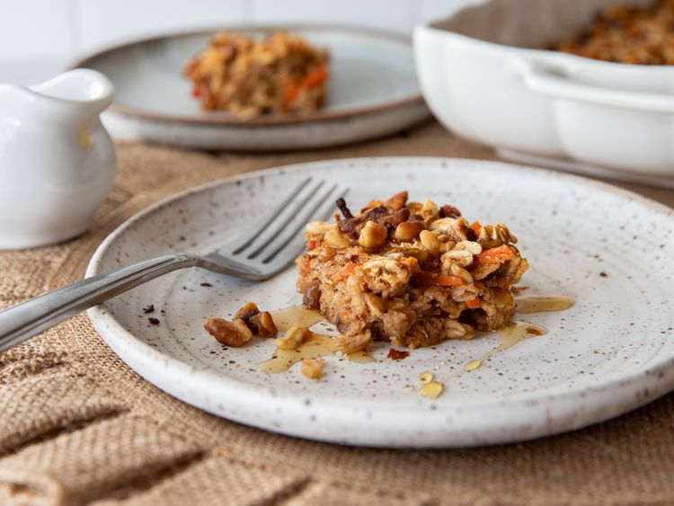

Baked Carrot Cake Oatmeal

Like Carrot Cake? Yes, duh! So try it as a great party snack in oatmeal form. The added raisins, walnuts and spices are a perfect combination and are a great dish to bring to your next get-together!
Cut into small squares and sprinkle with sugar or syrup for an addictive treat.
Ingredients
- 2 1/3 cups rolled oats
- 1/2 cup toasted walnuts
- 2 teaspoons ground Saigon cinnamon
- 1 teaspoon baking powder
- 1/2 teaspoon pumpkin pie Spices
- 1/2 teaspoon salt
- 1/3 cup pure maple syrup
- 1 3/4 cups half and half or evaporated milk
- 1 large egg
- 2 tablespoons unsalted butter, melted
- 2 teaspoons vanilla bean paste
- 2 carrots, peeled and cut into matchsticks
- 1 cup golden raisins
Steps
- Preheat oven to 375 degrees F. Spray a 9x13-inch baking dish with nonstick spray
- Stir oats, 1/4 cup walnuts, cinnamon, baking powder, pumpkin pie spice, and salt together in a bowl. Whisk maple syrup, half-and-half, egg, butter, and
vanilla bean paste together in another bowl; stir into oat mixture.
- Place carrots in a microwave-safe bowl; microwave on High for 45 seconds. Stir carrots and raisins into oat mixture; pour into the prepared baking dish.
Sprinkle remaining nuts on top.
- Bake in the preheated oven until the top is nicely golden and a toothpick inserted near the center comes out clean, 25 to 35 minutes.
- Remove from oven to cool completely. Cut into squares to serve.